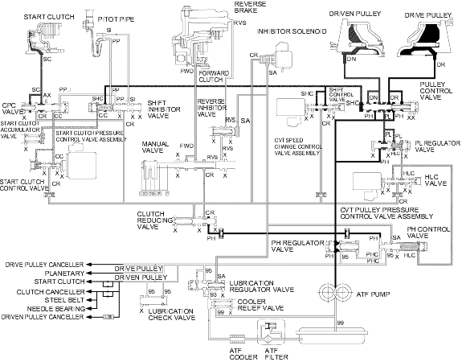

Position, at high speed range
Position, at high speed range
Honda Multi Matic Transmission/CVT
|
14-280 |
Hydraulic Flow (cont'd)
Position, at high speed range
Vehicle speed is further increased, the CVT speed change control valve assembly moves the SHC valve to increase shift control pressure (SHC) at the left end of the pulley control valve. The pulley control valve is moved to right side compared to its position at middle pulley ratio. The pulley control valve uncovers the port leading high pressure (PH) to the drive pulley and uncovers the port leading low pressure (PL) to the driven pulley. The drive pulley receives high pressure (PH) and the driven pulley receives low pressure (PL) and the pulley ratio is in the high. Hydraulic pressure remains to apply the forward clutch and the start clutch.
NOTE: When used, ''left'' or ''right'' indicates direction on the hydraulic circuit.
